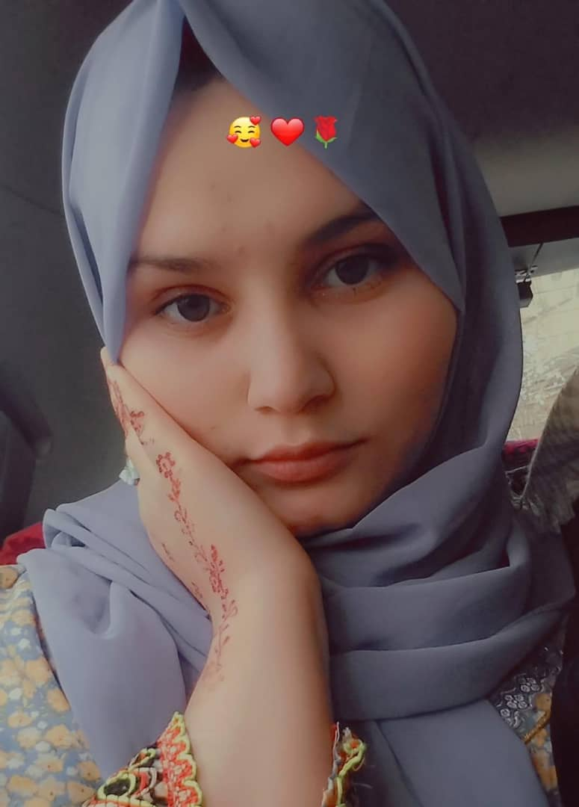

About Me
|  |
Khadija Niazi I am Khadija Niazi—an Afghan girl with big dreams and an unshakable faith. I come from a place where hope is a choice, and I choose it every single day. With a heart full of purpose and a mind set on growth, I walk the path of knowledge, compassion, and resilience. Whether I am teaching languages, learning to code, or chasing the light of wisdom, I do it with love, discipline, and trust in God. My journey is not easy, but it is mine-and I walk it with pride, courage, and a deep desire to one day uplift others, especially the girls of my homeland. This is more than a website. This is a piece of my soul. |
|---|
My Future Goals
The future I dream of is not just for me-it is for every girl who was told she couldn’t. I want to become a skilled programmer, fluent in multiple languages, and a strong, independent woman who shapes her own destiny. My goal is to work with global tech companies like Microsoft or Google, not just to succeed, but to prove that with faith, effort, and courage, anything is possible. Along the way, I want to empower girls from my homeland-those with dreams, but without the chance-to believe in themselves and rise. I believe that true success is not measured only by personal gain, but by how many lives you touch with the light you carry. This journey is just beginning, and I am walking it with purpose, hope, and trust in God.
People & Things That Inspire Me
- My Got Allah -The source of all strength, light, and peace in my heart.
- My Father - His hard work, wisdom, and quiet strength have shaped my sense of responsibility and courage.
- My Mother -Her endless love, sacrifices, and prayers are the reason I never give up.
- My Brother, Rahmatullh Niazi -He is more than just a brother. He is love, comfort, and support in human form.His presence gives me strength and reminds me that I am never alone in this journey.
- The Situation in Afghanistan -My homeland, with all its pain and struggle, is my greatest inspiration. It teaches me resilience, patience, and the value of even the smallest opportunity. I carry its sorrow and its hope with me, always.
- Every Girl Who Still Hopes -The silent dreams of Afghan girls push me to dream louder, work harder, and become a voice for those who cannot speak.
Things I Love
- Food -Kabuli Palaw, Bolani, and anything with rice!
- Books -I love reading psychology books, personal development, and anything that inspires the soul.
- languages -I enjoy learning English and German-they open doors to the world and new dreams.
- Programming -Exploring Java and the world of coding makes me feel powerful and creative.
- Tee Time - A cup of tea with a little sweet treat is my favorite way to relax.
My Favorites Table
| Category | Favorite |
|---|---|
| Song | Peaceful Piano |
| Book | Victory Through Thinking |
| Food | Qabeli Palaw |